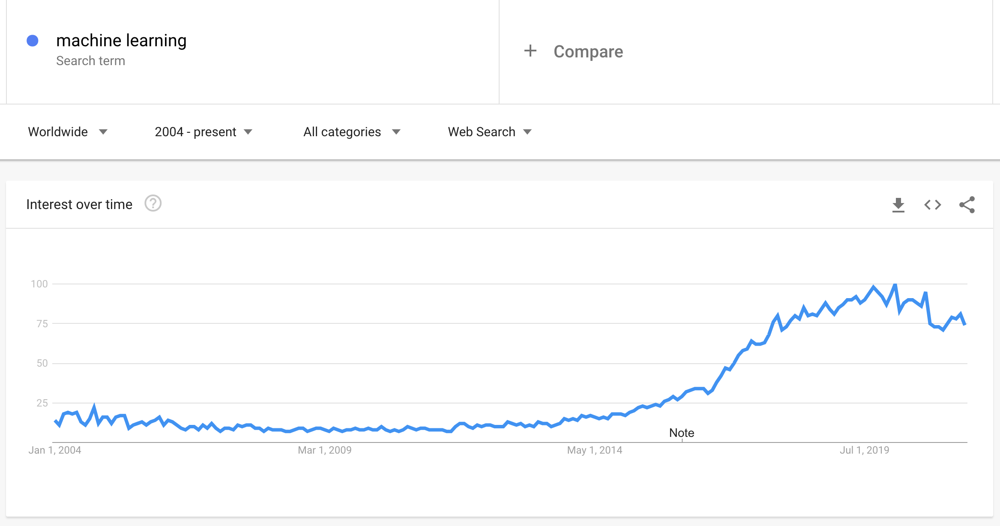

机器学习介绍⚓︎

🎥 点击上面的图片观看讨论机器学习、人工智能和深度学习之间区别的视频。
课前测验⚓︎
介绍⚓︎
欢迎来到这个经典机器学习的初学者课程！无论你是这个主题的新手，还是一个有经验的 ML 从业者，我们都很高兴你能加入我们！我们希望为你的 ML 研究创建一个好的开始，并很乐意评估、回应和接受你的反馈。

🎥 单击上图观看视频：麻省理工学院的 John Guttag 介绍机器学习
机器学习入门⚓︎
在开始本课程之前，你需要设置计算机能在本地运行 Jupyter Notebooks。
- 按照这些视频里的讲解配置你的计算机。了解有关如何在此视频集中设置计算机的更多信息。
- 学习 Python。 还建议你对 Python 有一个基本的了解。这是我们在本课程中使用的一种对数据科学家有用的编程语言。
- 学习 Node.js 和 JavaScript。在本课程中，我们在构建 web 应用程序时也使用过几次 JavaScript，因此你需要有 Node.js 和 npm 以及 Visual Studio Code 用于 Python 和 JavaScript 开发。
- 创建 GitHub 帐户。既然你在 GitHub 上找到我们，你可能已经有了一个帐户，但如果没有，请创建一个帐户，然后 fork 此课程自己使用(也给我们一颗星星吧😊)
- 探索 Scikit-learn. 熟悉 Scikit-learn，我们在这些课程中引用的一组 ML 库。
什么是机器学习？⚓︎
术语“机器学习”是当今最流行和最常用的术语之一。 如果你对科技有某种程度的熟悉，那么很可能你至少听说过这个术语一次，无论你在哪个领域工作。然而，机器学习的机制对大多数人来说是一个谜。 对于机器学习初学者来说，这个主题有时会让人感到不知所措。 因此，了解机器学习的实质是什么，并通过实例一步一步地了解机器学习是很重要的。

谷歌趋势显示了“机器学习”一词最近的“趋势曲线”
我们生活在一个充满迷人奥秘的宇宙中。像史蒂芬·霍金、阿尔伯特·爱因斯坦等伟大的科学家，以及更多的人，都致力于寻找有意义的信息，揭示我们周围世界的奥秘。这就是人类学习的条件：一个人类的孩子在长大成人的过程中，一年又一年地学习新事物并揭示世界的结构。
孩子的大脑和感官感知到周围的事实，并逐渐学习隐藏的生活模式，这有助于孩子制定逻辑规则来识别学习模式。人类大脑的学习过程使人类成为世界上最复杂的生物。不断地学习，通过发现隐藏的模式，然后对这些模式进行创新，使我们能够使自己在一生中变得越来越好。这种学习能力和进化能力与一个叫做大脑可塑性的概念有关。从表面上看，我们可以在人脑的学习过程和机器学习的概念之间找到一些动机上的相似之处。
人脑 从现实世界中感知事物，处理感知到的信息，做出理性的决定，并根据环境执行某些行动。这就是我们所说的智能行为。当我们将智能行为过程的复制品编程到计算机上时，它被称为人工智能 (AI)。
尽管这些术语可能会混淆，但机器学习 (ML) 是人工智能的一个重要子集。 机器学习关注使用专门的算法来发现有意义的信息，并从感知数据中找到隐藏的模式，以证实理性的决策过程。

显示 AI、ML、深度学习和数据科学之间关系的图表。图片作者 Jen Looper，灵感来自这张图
你将在本课程中学到什么⚓︎
在本课程中，我们将仅涵盖初学者必须了解的机器学习的核心概念。 我们主要使用 Scikit-learn 来介绍我们所谓的“经典机器学习”，这是一个许多学生用来学习基础知识的优秀库。要理解更广泛的人工智能或深度学习的概念，机器学习的基础知识是必不可少的，所以我们想在这里提供它。
在本课程中，你将学习：
- 机器学习的核心概念
- 机器学习的历史
- 机器学习和公平性
- 回归
- 分类
- 聚类
- 自然语言处理
- 时序预测
- 强化学习
- 机器学习的实际应用
我们不会涵盖的内容⚓︎
- 深度学习
- 神经网络
- AI
为了获得更好的学习体验，我们将避免神经网络、“深度学习”（使用神经网络的多层模型构建）和人工智能的复杂性，我们将在不同的课程中讨论这些问题。 我们还将提供即将推出的数据科学课程，以专注于这个更大领域的这一方面。
为什么要学习机器学习？⚓︎
从系统的角度来看，机器学习被定义为创建可以从数据中学习隐藏模式以帮助做出智能决策的自动化系统。
这种动机大致是受人脑如何根据它从外部世界感知到的数据来学习某些东西的启发。
✅ 想一想为什么企业想要尝试使用机器学习策略而不是创建基于硬编码的规则引擎。
机器学习的应用⚓︎
机器学习的应用现在几乎无处不在，就像我们的智能手机、互联设备和其他系统产生的数据一样无处不在。考虑到最先进的机器学习算法的巨大潜力，研究人员一直在探索其解决多维多学科现实问题的能力，并取得了巨大的积极成果。
你可以在很多方面使用机器学习:
- 根据病人的病史或报告来预测患病的可能性。
- 利用天气数据预测天气。
- 理解文本的情感。
- 检测假新闻以阻止其传播。
金融、经济学、地球科学、太空探索、生物医学工程、认知科学，甚至人文学科领域都采用机器学习来解决其领域中艰巨的、数据处理繁重的问题。
机器学习通过从真实世界或生成的数据中发现有意义的见解，自动化了模式发现的过程。事实证明，它在商业、健康和金融应用等方面具有很高的价值。
在不久的将来，由于机器学习的广泛应用，了解机器学习的基础知识将成为任何领域的人们的必修课。
🚀 挑战⚓︎
在纸上或使用 Excalidraw 等在线应用程序绘制草图，了解你对 AI、ML、深度学习和数据科学之间差异的理解。添加一些关于这些技术擅长解决的问题的想法。
阅读后测验⚓︎
复习与自学⚓︎
要了解有关如何在云中使用 ML 算法的更多信息，请遵循以下学习路径。
任务⚓︎
创建日期: November 22, 2023